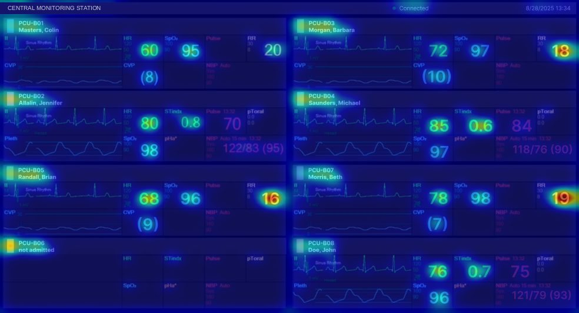
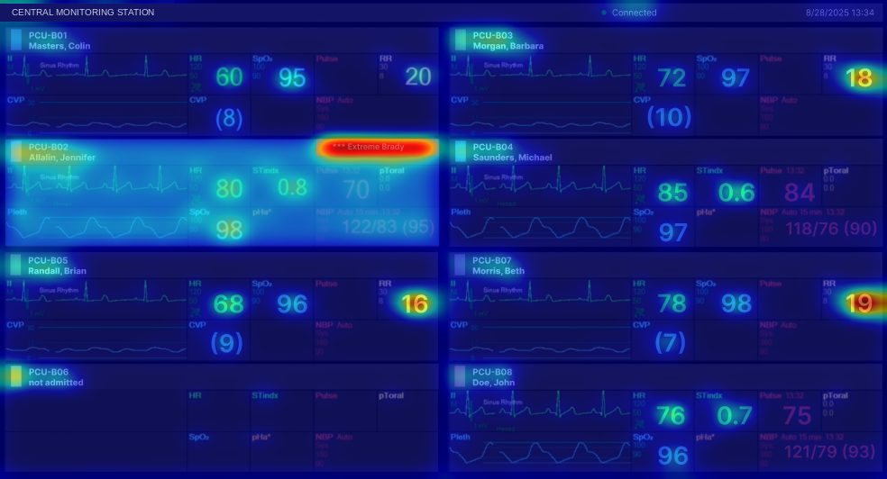
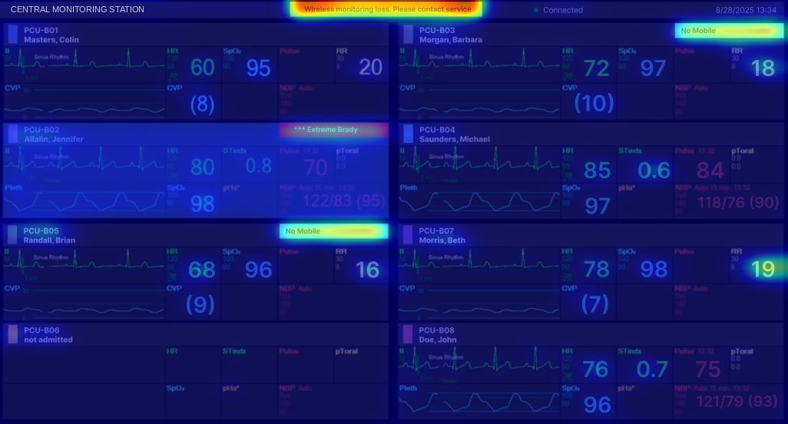
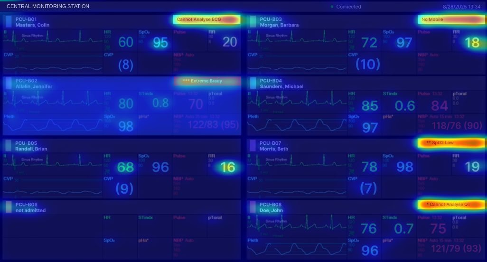
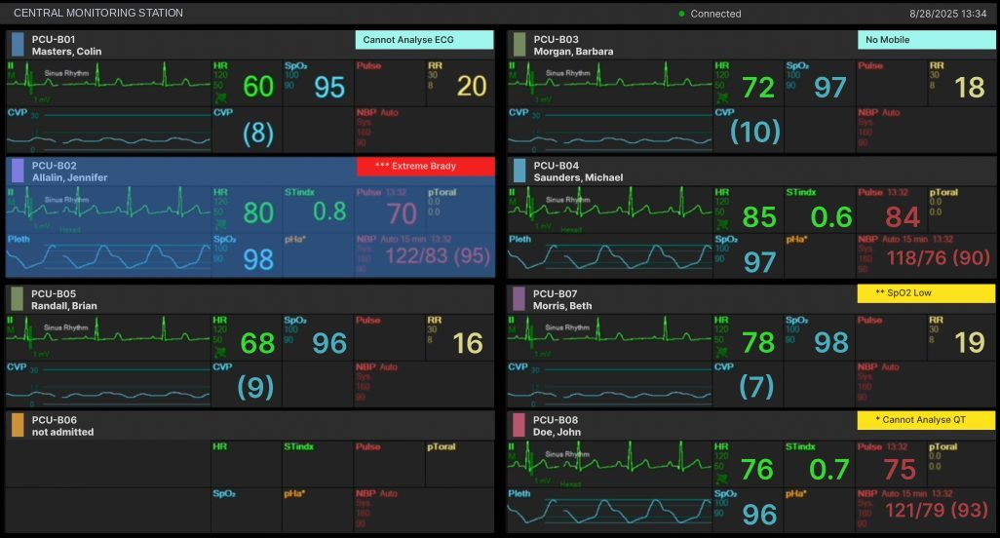
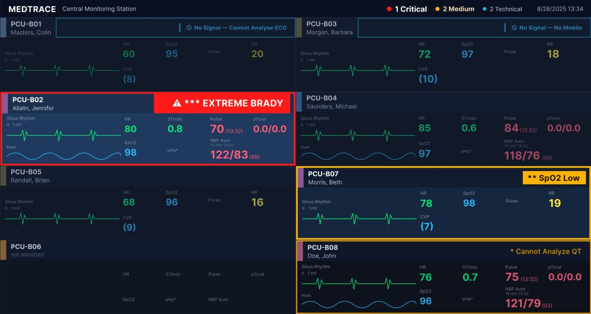

Fatigue d'alarme en réanimation
L'alarme la plus critique reste-t-elle visible quand le nombre d'alarmes affichées augmente ? Mesure sur une station de surveillance de soins intensifs, puis correction et nouvelle mesure.
Ce que mesure l'étude
Le regard est prédit par un modèle appliqué à des images fixes. Aucun oculomètre n'a été utilisé et aucun soignant n'a été observé. Les résultats décrivent une propriété de l'affichage, pas la performance d'un opérateur. L'étude ne traite ni la composante sonore des alarmes, ni le réglage des seuils de déclenchement.
L'interface analysée est un produit commercialisé. Le constructeur n'est pas nommé, et les captures ont été retouchées pour retirer les marques. L'étude est indépendante : ni commanditée, ni validée par le constructeur.
Contexte
Un patient de soins intensifs est relié à plusieurs équipements : moniteur multiparamétrique, respirateur, pompes à perfusion, dispositifs d'épuration. Chacun dispose de son propre système d'alarme. Le personnel traite donc chaque jour un volume important de signaux, dont la plupart n'appellent aucune action.
Entre 80 % et 99 % des alarmes déclenchées à l'hôpital sont fausses ou cliniquement non pertinentes. L'exposition répétée réduit la réactivité aux alarmes qui, elles, le sont : c'est la fatigue d'alarme, classée au premier rang des risques technologiques médicaux par l'ECRI Institute et objectif national de sécurité des patients de la Joint Commission depuis 2014.
La littérature caractérise ce problème par le volume d'alarmes. Une analyse conduite au Johns Hopkins Hospital a recensé plus de 59 000 conditions d'alarme sur 12 jours, soit environ 350 alarmes par patient et par jour. Cette étude porte sur une propriété distincte : la capacité de l'affichage à maintenir un signal critique visible quand plusieurs signaux coexistent. Réduire le volume agit sur l'exposition ; améliorer la hiérarchisation visuelle agit sur la détectabilité à volume constant.
Objet analysé
Une station de surveillance centralisée agrège en temps réel les données de plusieurs moniteurs de chevet sur un écran unique, organisé en huit secteurs, un par patient. C'est le point du système où la quantité d'information affichée simultanément est la plus élevée.
Quatre conditions de charge ont été construites sur un même effectif de patients, à disposition et valeurs vitales constantes. L'alarme critique est identique et située au même emplacement dans les conditions 2 à 4 : seul le nombre de signaux concurrents varie.
| Condition | Alarmes affichées | Contenu de l'écran | Rôle |
|---|---|---|---|
| C1 — Baseline | 0 | Huit secteurs, aucun signal actif | Contrôle |
| C2 — Isolée | 1 | Une bannière rouge de priorité haute | Maximum attendu |
| C3 — Mixte | 4 | Bannière rouge + 2 alertes techniques + 1 alerte système | Charge intermédiaire |
| C4 — Extrême | 5 | Bannière rouge + 2 jaunes + 2 cyan simultanées | Charge maximale |
Méthode
1. Évaluation heuristique
2. Analyse du regard
Saillance visuelle : capacité d'une zone de l'image à attirer le regard indépendamment de la tâche en cours. Elle dépend des seules propriétés physiques de l'image — contraste, couleur, orientation — non du sens de ce qui est affiché. Le modèle ne représente donc pas la stratégie de balayage d'un soignant entraîné.
Où se porte le regard
Les quatre cartes produites par le modèle, superposées à l'image d'origine. L'attention prédite croît du bleu au rouge.




Mise en chiffres
Ratio de visibilité = attention moyenne sur la zone d'alarme ÷ attention moyenne sur l'écran entier. Ce rapport est sans unité : ×1 signifie que la zone capte autant l'attention que la moyenne de l'écran, ×8,72 qu'elle en capte 8,72 fois plus. La zone est délimitée automatiquement par sa couleur, à l'intérieur du secteur concerné.
| Condition | Alarmes affichées | Ratio de visibilité (sans unité) | Lecture |
|---|---|---|---|
| C1 — Baseline | 0 | ×1,35 * | Aucune bannière affichée : voir la note |
| C2 — Isolée | 1 | ×8,72 | Maximum observé |
| C3 — Mixte | 4 | ×5,27 | Baisse de 40 % par rapport à C2 |
| C4 — Extrême | 5 | ×4,82 | Baisse de 44,7 % par rapport à C2 |
* En condition 1, aucune bannière n'est affichée : la détection par la couleur retient les pixels rouges résiduels du secteur, c'est-à-dire le texte rose des valeurs de pouls et de pression. Cette valeur ne mesure pas la visibilité d'une alarme et n'est comparable à aucune autre ligne. Elle est exclue de tous les calculs.
Conformité de la conception
21 critères sur 34 évaluables sont conformes, soit 62 %. Les écarts portent sur la redondance du codage, la densité d'information et la priorisation sous alarmes multiples.
| Référentiel | Conf. | Partiel | Non conf. | Non éval. | Taux |
|---|---|---|---|---|---|
| Bastien & Scapin | 11 | 4 | 1 | 2 | 69 % |
| Nielsen | 5 | 2 | 1 | 2 | 62 % |
| Codage des alarmes médicales | 1 | 0 | 1 | 0 | 50 % |
| Charge d'alarme (transposé) | 0 | 0 | 1 | 0 | 0 % |
| Analyse complémentaire | 4 | 0 | 3 | 0 | 57 % |
| Total (38 critères) | 21 | 6 | 7 | 4 | 62 % |
Points conformes
Trois des vingt et un critères satisfaits concernent directement la sécurité du traitement des alarmes. Les alarmes de priorité haute sont à acquittement obligatoire : la bannière persiste tant qu'un opérateur n'a pas agi, même si la condition physiologique a cessé, avec rappel sonore toutes les trois minutes. La couleur cyan est réservée aux alertes techniques, ce qui permet d'écarter une catégorie entière de signaux sans en lire le libellé. L'historique est conservé sept jours.
Ces trois éléments protègent la persistance du signal dans le temps. Ils ne concernent pas sa visibilité à un instant donné, qui est la variable mesurée ici.
Interprétation
Trois mécanismes attentionnels rendent compte des résultats. Aucun n'est démontré par cette étude : ce sont les explications les plus économiques au regard de modèles établis.
Recherche visuelle. Une cible qui se distingue par une seule caractéristique élémentaire — ici la couleur — est détectée immédiatement, quel que soit le nombre d'éléments présents. Si elle ne se distingue que par une combinaison de caractéristiques, un balayage devient nécessaire et sa durée augmente avec le nombre d'éléments. En C2, la bannière rouge est la seule couleur vive. En C4, trois couleurs vives coexistent sur cinq bannières de géométrie identique : la couleur ne suffit plus à isoler la cible.
Charge d'information. L'écran est déjà dense avant toute alarme : huit secteurs, six à dix valeurs numériques chacun, deux tracés. La carte de la condition 1 le montre — en l'absence de tout signal d'alerte, les grandes valeurs numériques captent déjà l'essentiel du regard prédit. Une bannière ajoutée entre en concurrence avec des éléments déjà présents.
L'écart normatif relevé par la grille et la baisse mesurée par le modèle décrivent le même fait, par deux chemins indépendants.
Recommandations
Cinq recommandations, chacune rattachée au critère qui la motive. Trois ont été prototypées.
| Recommandation | Contenu | Critère source | Risque | Effort |
|---|---|---|---|---|
| R1 — Redondance de codage | Associer à chaque niveau une combinaison stable de forme, de pictogramme et de position, en complément de la couleur | Codage des alarmes, crit. 2 | Élevé | Moyen |
| R2 — Formats différenciés | Faire varier hauteur, épaisseur de bordure et emprise de la bannière selon le niveau, plutôt que recolorer un format unique | Analyse compl., crit. 4 | Élevé | Faible |
| R3 — Priorisation dynamique | Afficher un décompte par niveau en tête d'écran et atténuer les secteurs sans alarme au-delà d'une alarme active | Analyse compl., crit. 1 et 5 | Élevé | Élevé |
| R4 — Densité réduite | Atténuer les informations secondaires des secteurs non alarmés pendant qu'une alarme critique est active | B&S crit. 8, Nielsen crit. 8 | Moyen | Élevé |
| R5 — Texte agrandi | Augmenter la taille du texte des bannières, dont l'écart avec les valeurs vitales voisines est important | B&S crit. 5 | Faible | Faible |
R4 n'a pas été prototypée. Atténuer les secteurs sans alarme réduit la visibilité d'informations qui restent pertinentes, sur des secteurs susceptibles de passer eux-mêmes en alarme. Cette recommandation introduit donc un risque propre, qui demande une validation clinique spécifique, hors du périmètre de l'étude.
Principe de conception du prototype
Le prototype ne modifie que les points identifiés comme non conformes. L'état sans alarme conserve la structure, la disposition et la densité d'origine ; les corrections s'activent selon le nombre et le niveau des alarmes actives. Outre l'intérêt pratique, ce choix limite le nombre de variables modifiées entre les deux jeux d'images, ce qui rend la comparaison interprétable.
Avant / après


Validation comparative
Le même protocole a été appliqué aux quatre conditions redessinées : même modèle, mêmes paramètres, même définition de la zone d'intérêt.
Baisse du ratio de visibilité de l'alarme critique entre une alarme affichée (C2) et cinq (C4). La variation est mesurée à l'intérieur de chaque interface, ce qui neutralise l'écart de chaîne de rendu entre les deux jeux d'images.
| Condition | Alarmes | Avant (sans unité) | Après (sans unité) | Écart |
|---|---|---|---|---|
| C2 — Isolée | 1 | ×8,72 | ×16,56 | ×1,9 |
| C3 — Mixte | 4 | ×5,27 | ×16,06 | ×3,0 |
| C4 — Extrême | 5 | ×4,82 | ×11,64 | ×2,4 |
La condition 1 n'apparaît pas : sans bannière affichée, elle ne mesure pas la visibilité d'une alarme. Le détail figure dans le rapport.
La baisse n'est pas supprimée : elle reste attendue dès que plusieurs éléments colorés coexistent. Elle est réduite d'un tiers environ. En valeur absolue, la bannière critique du prototype reste en condition 4 la zone la plus regardée de l'écran, alors que sur l'interface d'origine des bannières de priorité inférieure atteignaient une visibilité voisine.
Limites
Le regard est prédit, non mesuré : aucune donnée de fixation oculaire n'a été recueillie. Une baisse de saillance prédite n'établit pas un allongement du temps de détection chez un opérateur réel — elle établit que la propriété d'affichage sur laquelle repose la détection se dégrade. Le lien avec la performance humaine relève de la littérature citée, pas d'une mesure produite ici.
Le modèle a par ailleurs été développé pour cette étude. Il n'a pas été confronté à un modèle indépendant : un biais d'implémentation ne peut être exclu. La levée de ces deux limites passerait par une validation en oculométrie sur soignants, appliquée aux mêmes conditions.
Rapport complet · PDF · 19 pages
Méthode détaillée, grille des 38 critères ligne par ligne, modèle de saillance et références.